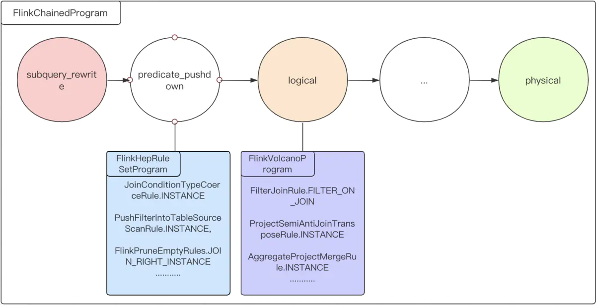

在 Flink-DDL-SQL-With-Calcite 一文中介绍了 flink-sql-parser 的工程实现，以及 SQL 解析、SQL 校验的相关细节，
本文主要介绍在 DML SQL 中，Calcite 是如何做 SQL 查询优化的。
Query
org.apache.flink.table.planner.plan.stream.sql.TableScanTest#testEventTimeTemporalJoinOnUpsertSource 测试用例：
1 | CREATE TABLE orders ( |
SqlNode -> RelNode 语句执行流程
查询 SQL 语句的解析、转换、执行流程：
1 |
|
初始生成的 RelNode ，如图所示：

优化
Flink Program 构建及相关优化规则，如图：

优化过程打印：
1 |
|
subquery_rewrite 前后对比：
logical 前后对比：
logical_rewrite 前后对比：
time_indicator 前后对比：
physical 前后对比：
physical_rewrite 前后对比：
最初的 RelNode 经过逻辑优化、物理优化后，最终生成 Flink 物理执行计划 FlinkPhysicalRel 。
其中，FlinkLogicalCalc 包含了 Project 和 Filter 操作，StreamExecExchange 继承了 Calcite 的 Exchange ，标识一次 hash distribute 。

生成 Transformation
1 |
|
RichInsert
1 |
|
SqlNode -> RelNode 语句执行流程
Insert SQL 语句的解析、转换、执行流程：
1 |
|
初始生成的 RelNode ，如图所示：

优化
优化过程打印：
1 |
|
subquery_rewrite
subquery_rewrite 前后对比：
temporal_join_rewrite
temporal_join_rewrite 前后对比：

decorrelate
decorrelate 前后对比：
default_rewrite
default_rewrite 前后对比：
predicate_pushdown
predicate_pushdown 前后对比：

project_rewrite
project_rewrite 前后对比：

logical
logical 前后对比：

logical_rewrite
logical_rewrite 前后对比：
time_indicator
time_indicator 前后对比：

physical
physical 前后对比：

physical_rewrite
physical_rewrite 前后对比：

参考
Flink 源码阅读笔记 - Flink SQL 整体执行框架
Flink Sql 之 Calcite Volcano 优化器（源码解析）
SQL 查询优化原理之 Volcano Optimizer 介绍
SQL 解析框架 - Calcite
FlinkSQL 生成 StreamGraph